AAC BLOCK // MODERN CONSTRUCTION
Bata ringan (hebel) adalah material bangunan modern berbentuk blok, terbuat dari campuran pasir silika, semen, kapur, dan bahan pengembang. Diproses dengan teknologi tinggi, hebel ringan, presisi, tahan api, serta memiliki insulasi panas dan suara yang unggul.
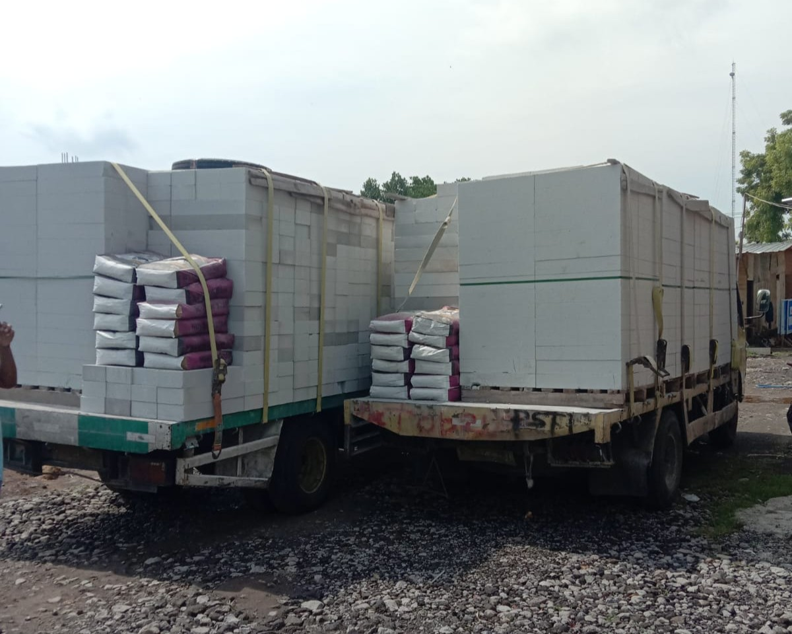
Hemat Mortar
Lebih Ringan
Standar Nasional
Tersedia
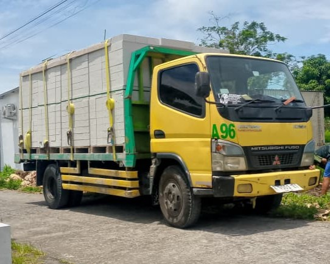
Bata ringan (hebel) adalah material bangunan modern berbentuk blok, terbuat dari campuran pasir silika, semen, kapur, dan bahan pengembang. Diproses dengan teknologi tinggi, hebel ringan, presisi, tahan api, serta memiliki insulasi panas dan suara yang unggul.
Ukuran standar 60x20cm dengan ketebalan 7.5cm dan 10cm.
Lihat Spesifikasi| TIPE | PANJANG | LEBAR | TEBAL | BERAT JENIS | KUAT TEKAN |
|---|---|---|---|---|---|
| A-7.5 | 60 cm | 20 cm | 7.5 cm | 550-650 kg/m³ | ≥ 3.5 MPa |
| A-10 | 60 cm | 20 cm | 10 cm | 550-650 kg/m³ | ≥ 3.5 MPa |
* Spesifikasi dapat bervariasi antar merek. Konsultasikan dengan tim kami untuk kebutuhan spesifik.
Bobot ringan mengurangi beban struktur hingga 30%. Dimensi presisi meminimalkan penggunaan mortar.
Material tidak mudah terbakar, memberikan perlindungan ekstra untuk bangunan Anda.
Struktur seluler mampu meredam suara hingga 40-50 dB, menciptakan lingkungan yang tenang.
Material daur ulang dan proses produksi hemat energi, mengurangi jejak karbon konstruksi.
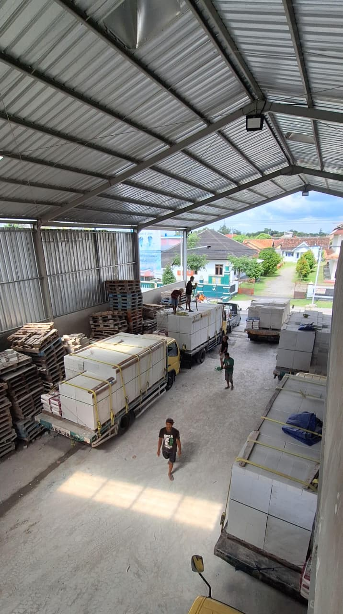
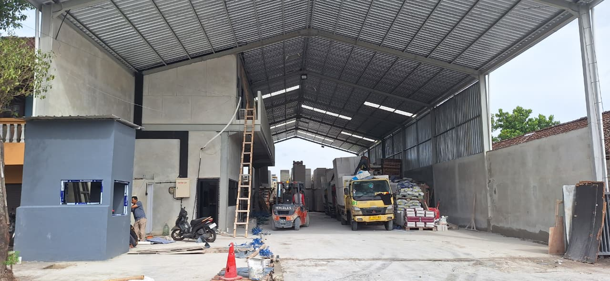
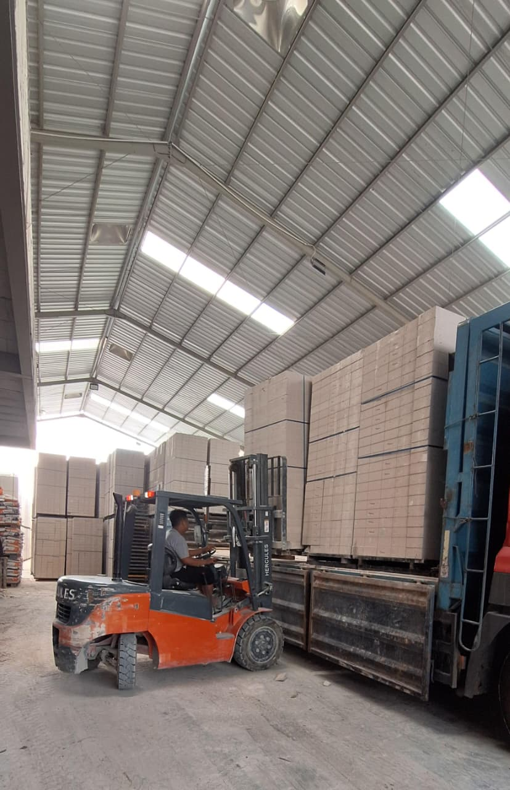
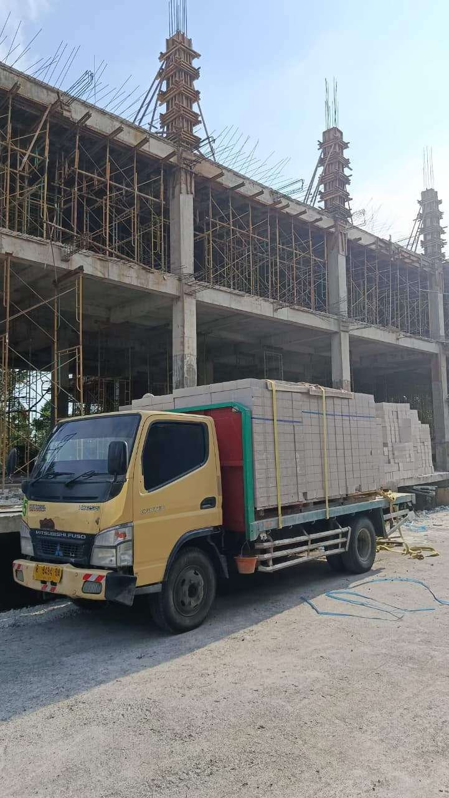
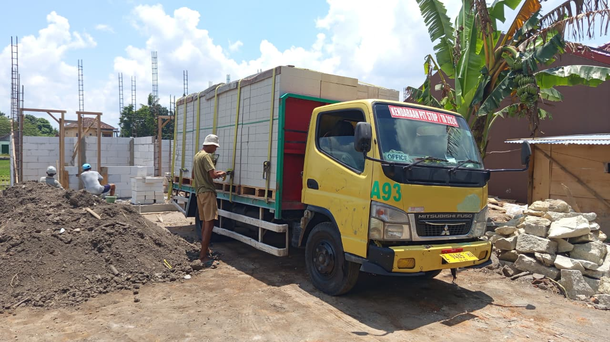
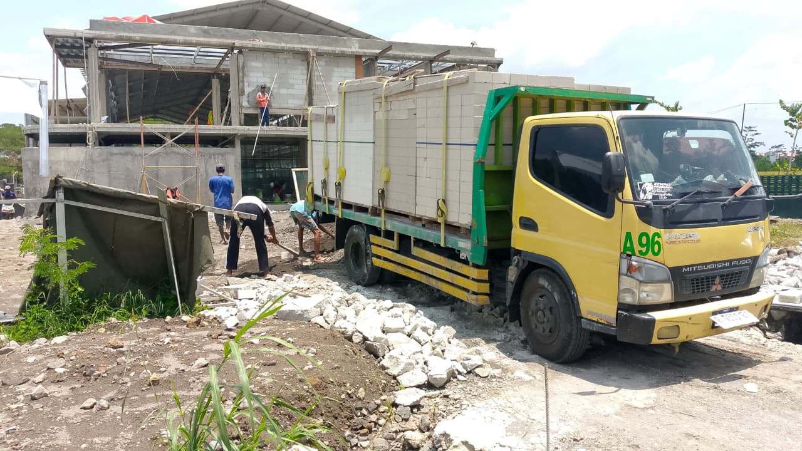
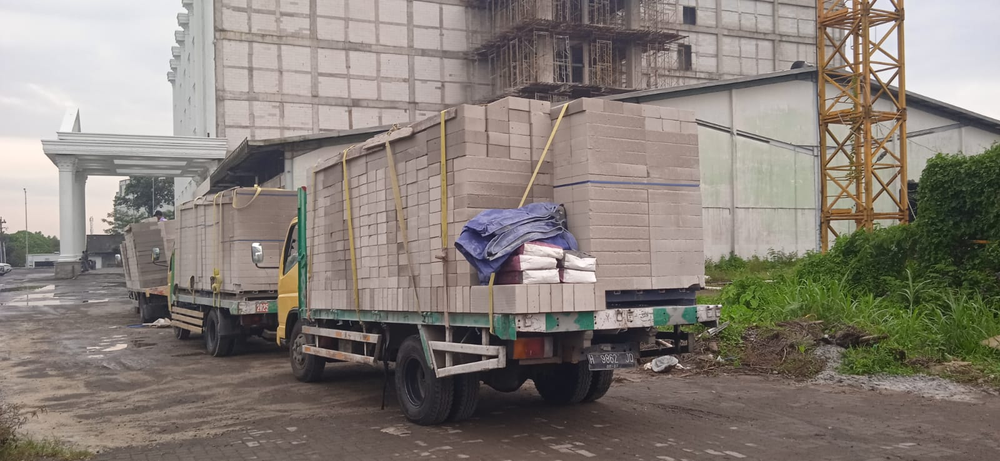
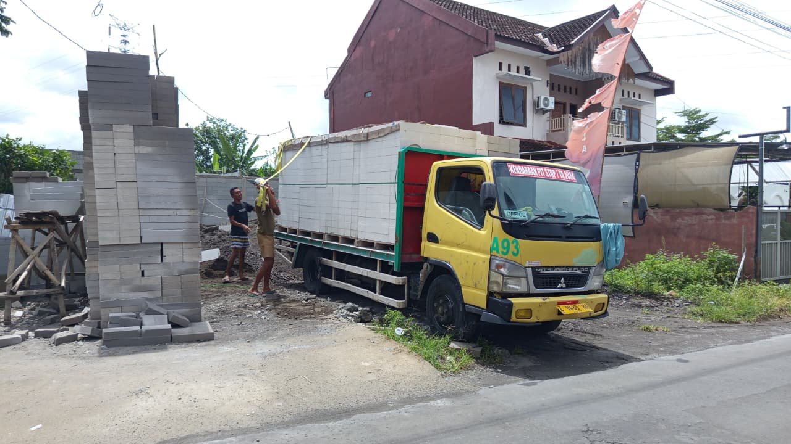
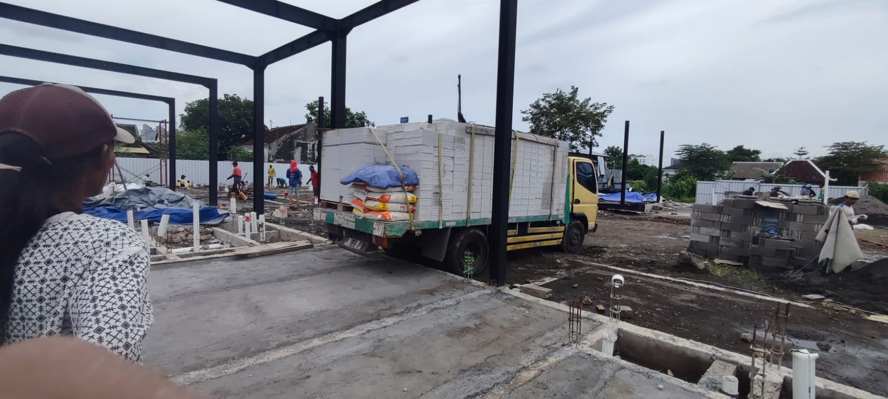
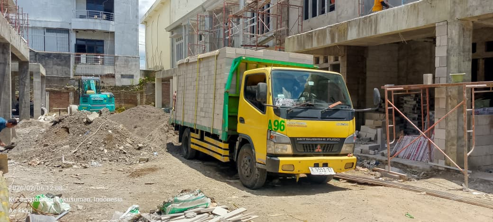
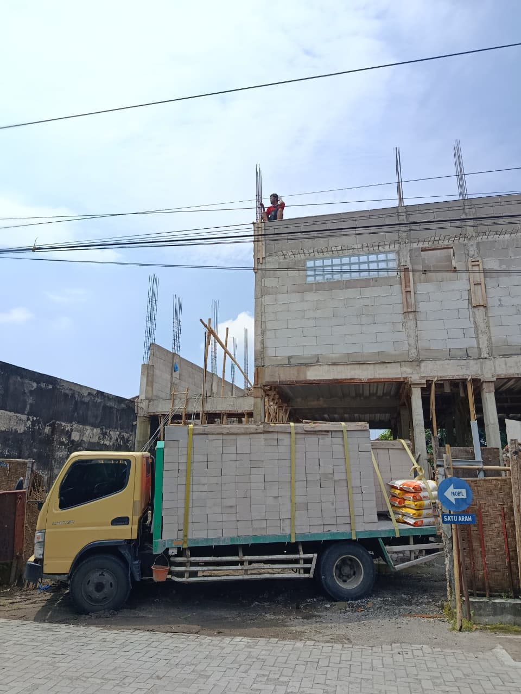
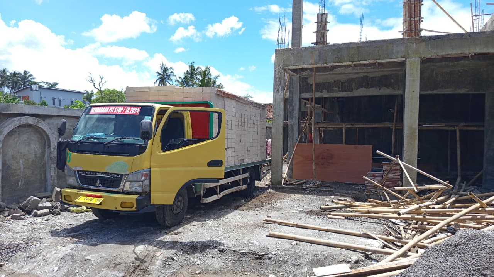
* Dokumentasi proyek bata ringan Mandiri Jaya
Dapatkan harga terbaik dan konsultasi gratis dari tim kami.